Step 1
Connect a wallet
Sign in with WAX Cloud Wallet, Wombat or Anchor.
Unclaimed Acres
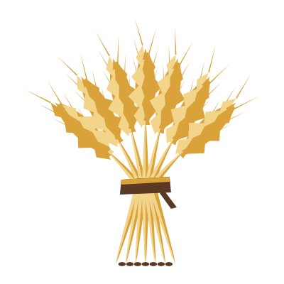
64 crops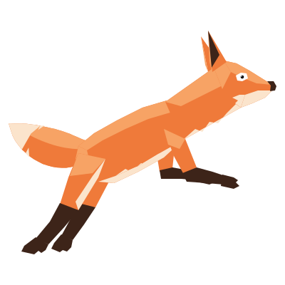
50+ creaturesA calm farming and creature game. Every island is generated, stored on the WAX blockchain and owned by your wallet. Plant 64 crops, meet more than 50 creatures, and play entirely at your own pace.
Islands
Each island is generated from scratch and written to the WAX blockchain. It is owned by your wallet, so it is genuinely yours.
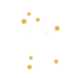
Peninsulas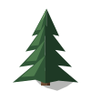
Forests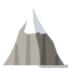
Snowy peaks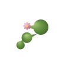
Lakes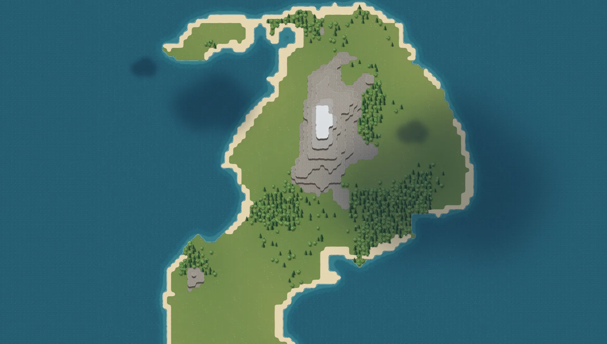
Map view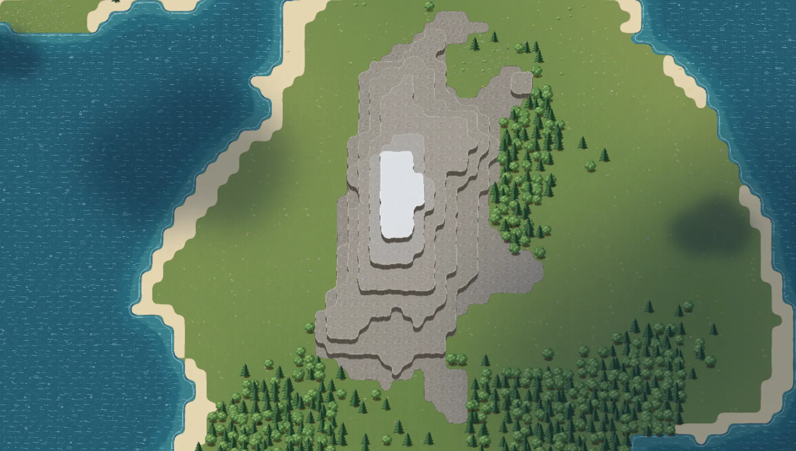
Terraced peakCreatures
Foxes and red panda, kitsune and crystal turtles. Every creature is drawn from the side and from above, exactly as it walks across your map.
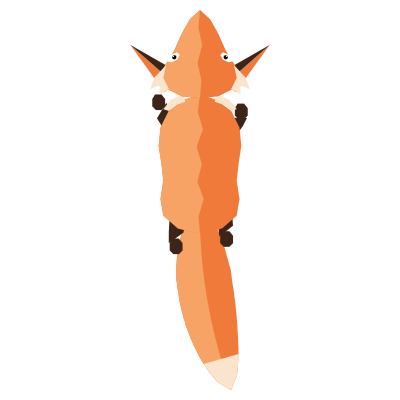
Tap a creature in the meadow to inspect it.
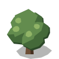
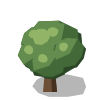
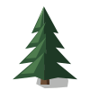
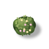
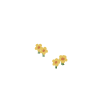
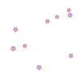
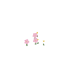
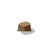
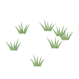
Crops
64 crops, each drawn through 8 stages: the seeds, five stages in the soil seen from above, the harvest, and a wilted plant. From wheat and tomatoes to moonbloom, glowcaps and an egg plant that really grows eggs.
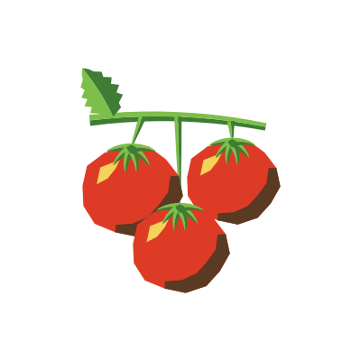
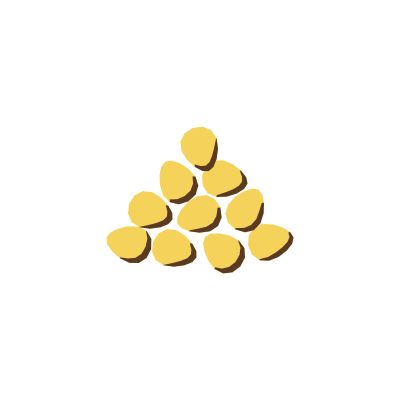
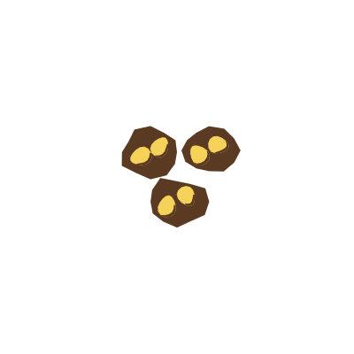
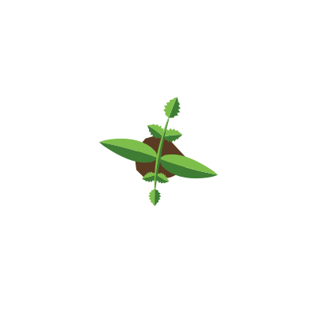
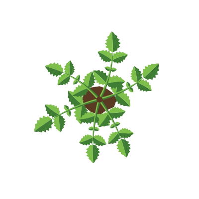
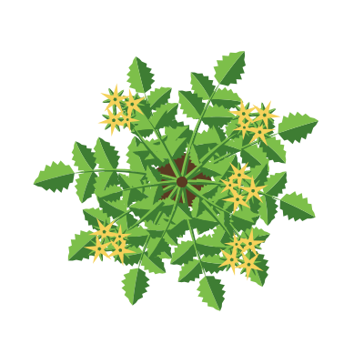
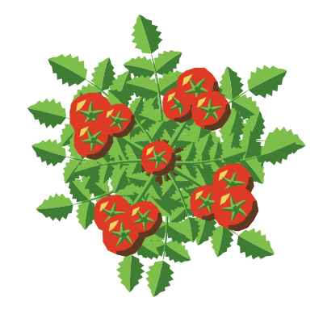
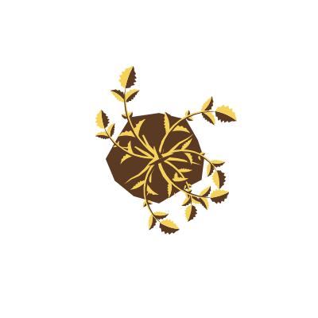
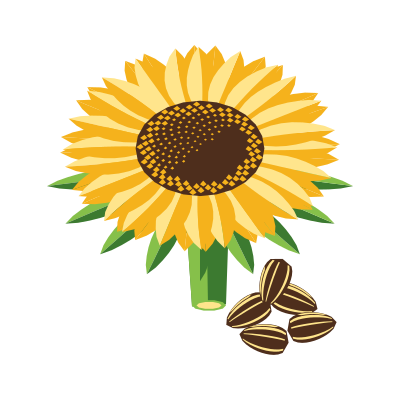
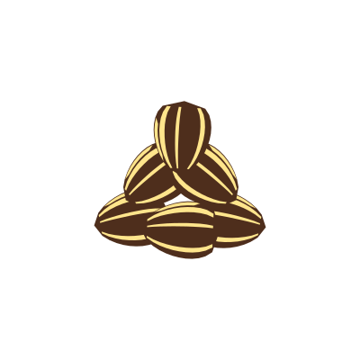
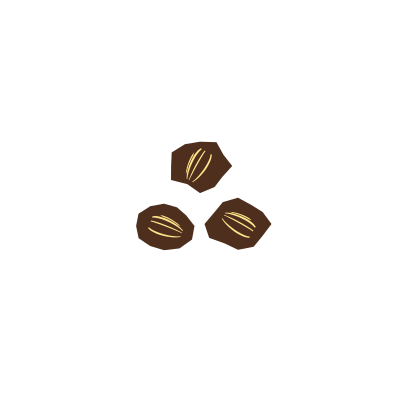
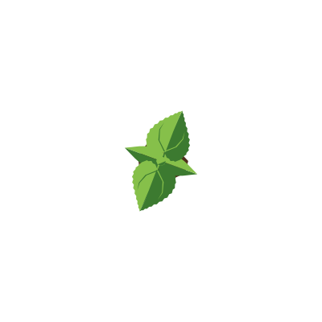
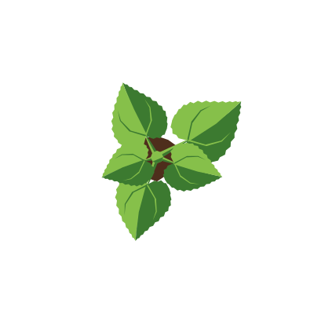
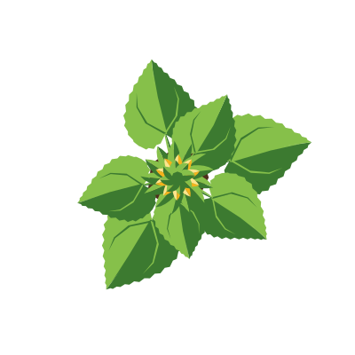
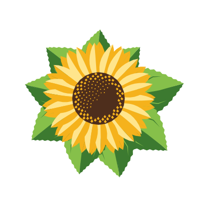
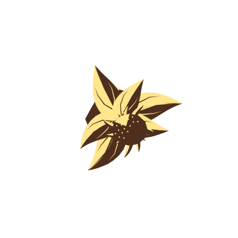


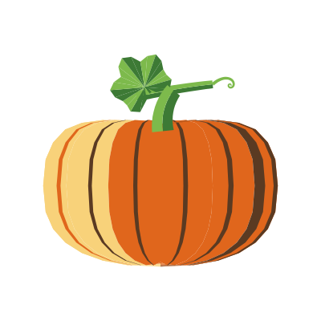
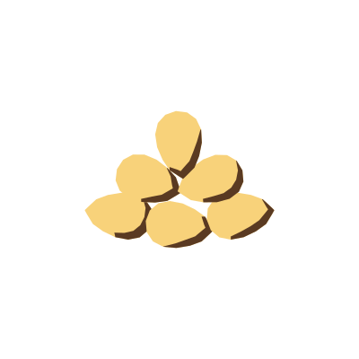
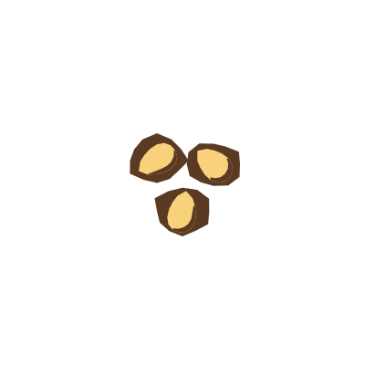
Seed bag
Everyday staples, tropical fruit and a handful of fantasy and silly crops. Hover a slot to see its name.
 Glowcap
Glowcap Ember pepper
Ember pepperHow it plays
Unclaimed Acres is built to be played slowly. There is no rush and no clock to race; come back whenever you like. The game is in development, so these are the foundations.
Sign in with WAX Cloud Wallet, Wombat or Anchor.
Generated, stored on chain and owned by your wallet. Nobody else has one like it.
Raise crops through every stage, from seeds in the soil to a full harvest.
Discover more than 50 creatures, each drawn from the side and from above.

Connect a wallet to step onto your own island: room for a field, a meadow full of creatures, and all the time you want.